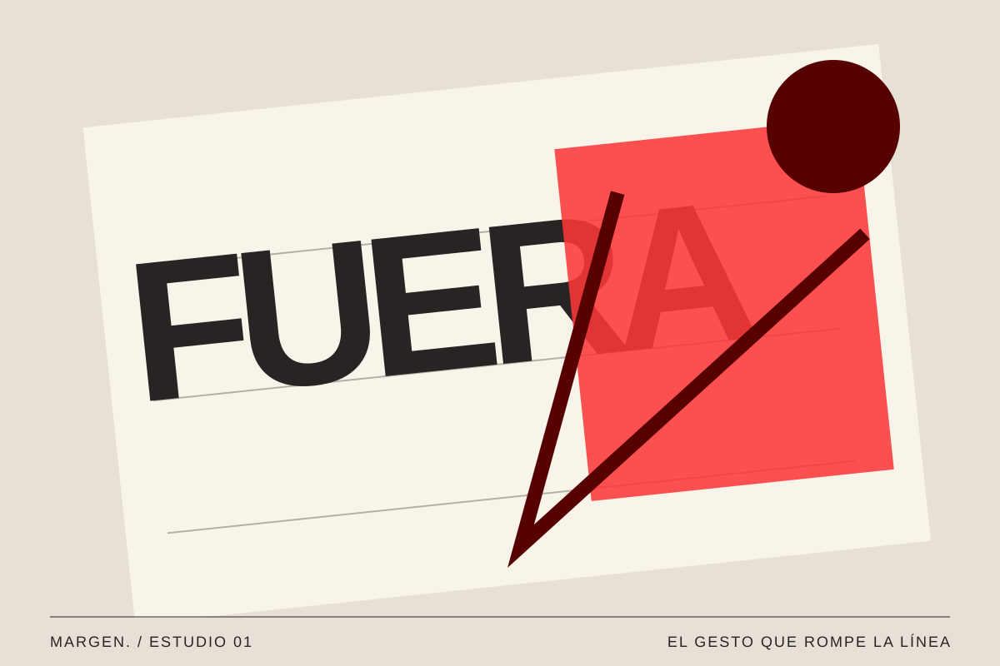
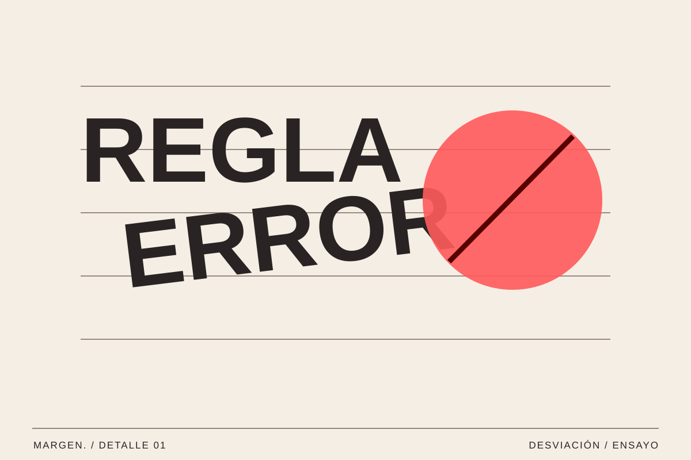

01 / Diseño / Vol. 001
Cuando el diseño deja de ser perfecto
Romper las reglas también puede ser una forma de diseñar.
MARGEN. / Texto editorial ·

Una letra que se sale de la línea. Una fotografía cortada de una forma inesperada. Un color que parece fuera de lugar. A veces, lo que nos hace detenernos ante un diseño es precisamente aquello que no encaja del todo.
El orden es un punto de partida
Cuando empezamos a diseñar, aprendemos a alinear, a mantener márgenes y a organizar la información. Estas herramientas nos ayudan a que una composición se entienda. Una retícula marca relaciones; una jerarquía indica por dónde empezar. Son decisiones útiles porque permiten que quien mira encuentre un recorrido sin tener que adivinarlo.
Pero una pieza puede estar perfectamente ordenada y no decir demasiado. Si todas las formas tienen el mismo peso y cada elemento ocupa el lugar esperado, la mirada puede pasar de largo. Introducir una pequeña tensión es una forma de crear una pausa y dar personalidad al mensaje.
La claridad no depende de que todas las piezas sean idénticas, sino de que sepamos distinguir sus funciones. En una doble página editorial, por ejemplo, una fotografía puede ocupar casi todo el espacio mientras el texto se concentra en una columna muy estrecha. No es una falta de equilibrio: la diferencia entre ambos elementos es precisamente lo que marca el recorrido. Las reglas ofrecen una base desde la que decidir qué merece destacar y qué debe permanecer en segundo plano.

Una pequeña tensión puede cambiar toda una lectura.
Una imperfección con intención
Imaginemos un cartel para un encuentro de ilustración. El título aparece ligeramente inclinado, mientras la fecha y el lugar permanecen alineados. El gesto transmite movimiento, pero la información práctica sigue siendo fácil de encontrar. La irregularidad tiene una función: expresa algo sobre la actividad sin impedir que el cartel cumpla su objetivo.
La misma decisión no tendría por qué funcionar en una página con instrucciones. Antes de romper una regla, conviene preguntarse qué aporta ese cambio. Desplazar una palabra puede señalarla. Superponer dos imágenes puede conectarlas. Cambiar la escala puede dar importancia a un detalle que, de otro modo, quedaría escondido.
Para comprobar si esa tensión tiene sentido, resulta útil hacer varias pruebas pequeñas. Podemos mover un titular unos centímetros, cambiar la proporción de una imagen o dejar que un elemento cruce el borde de una columna. Después, conviene alejarse de la pantalla y observar dónde se dirige la mirada primero. Cuando la alteración expresa una idea, suele aportar carácter; cuando solo añade decoración, acaba compitiendo con el contenido.

Dejar ver el proceso
Las texturas de papel, las marcas de impresión y los recortes hacen visible una forma de trabajar. Nos recuerdan que detrás de la imagen hay pruebas, materiales y decisiones. En una pantalla, esos detalles pueden aportar una sensación de cercanía: la composición parece tener una historia anterior al resultado final.
No hace falta llenar la página de efectos para conseguirlo. A veces basta con un borde irregular o una fotografía que conserve parte de su contexto. Si todos los elementos intentan llamar la atención al mismo tiempo, desaparece el contraste. La expresividad necesita también zonas tranquilas donde descansar.
El proceso también puede ser una fuente de lenguaje visual. Un papel doblado, una línea marcada a lápiz o una capa de tinta irregular introducen una materialidad que la pantalla no tiene por sí sola. Pero no hace falta simular una técnica artesanal para que un proyecto parezca más auténtico. Lo importante es elegir recursos coherentes con la historia que se cuenta y no convertir cada textura en una excusa para llenar el espacio.
Saber dónde parar
El reto consiste en conservar una lectura clara. Podemos probar una versión ordenada y otra con una única alteración, y comparar qué cambia. ¿Se entiende el título? ¿La imagen ayuda al texto? ¿El gesto aporta significado o solo ruido? Mirarlo en el móvil también puede revelar problemas que no aparecen en una pantalla grande.
Diseñar fuera del margen implica elegir qué se mueve y qué permanece. La personalidad no depende de acumular errores, sino de tomar decisiones conscientes. Quizá la pregunta más interesante no sea si todo está perfectamente alineado, sino si esa composición consigue decir lo que queremos y nos invita a volver a mirarla.
Una buena revisión consiste en quitar antes que añadir. Si un título ya tiene suficiente fuerza, tal vez no necesite un segundo gesto llamativo. Si la fotografía transmite movimiento, el texto puede aportar la calma que falta. Ese contraste permite que el diseño siga siendo legible y sorprendente a la vez. Una composición expresiva funciona mejor cuando hay lugares donde la mirada puede descansar.
Diseñar también es editar
La versión final rara vez es la primera. Guardar las pruebas y compararlas ayuda a entender qué decisiones han mejorado la lectura y cuáles la han complicado. No se trata de buscar una imperfección como estilo obligatorio, sino de aceptar que las soluciones más interesantes a veces aparecen durante la exploración, cuando nos permitimos probar algo que inicialmente parecía no encajar.
Ese es el valor de salirse del margen con intención: seguir teniendo una estructura, pero dejar suficiente espacio para que surjan formas nuevas de contar una idea.